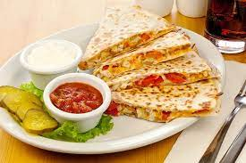

Quesadilla

Descirption
Quesadilla are a mexican dish that can be done in many ways. U can put meat in it or only cheese. Depends on your taste
Ingredients
Steps
- Grate the cheese
- Put the cheese on the corn tortilla. Fold and cook in a pan until the cheese is melted